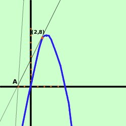

esercizio
Data la parabola
y= -x2
+ 6x
trovare le equazioni delle tangenti condotte alla parabola dal punto
A(-2,0) e determinarne i punti di tangenza
Soluzione:

prima disegniamo la parabola ed il
punto A(-2,0)
considero il fascio di rette passante per il punto A(-2,0)
y- 0 = m(x+2)
y = mx + 2m
Faccio il sistema fra il fascio di rette e la parabola
 y = mx - 4m
y = mx - 4m
y= -x2
+ 6x
Sostituisco il valore della y dalla prima equazione nella seconda ed ottengo
l'equazione risolvente
mx + 2m =
-x2
+ 6x
x2
- 6x + mx + 2m = 0
ordino
x2
- x(6-m) + 2m = 0
questa e' l'equazione risolvente il sistema: per avere due soluzioni
coincidenti devo porre il delta dell'equazione uguale a zero
 = b2-4ac =
0 = b2-4ac =
0
Ho
a = 1
b = -6+m
c = 2m
= b2-4ac =
(-6+m)2 - 4 (1)(2m) =0
36 - 12m + m2 - 8m = 0
metto in ordine
m2 - 20m + 36 = 0
risolvo l'equazione di secondo grado
ed ottengo
m1 = 2
m2 = 18
Ho quindi le due tangenti
- Prima tangente
y = 2x + 4
- Seconda tangente
y = 18x + 36
Ora devo trovare i punti di tangenza: e' sufficiente risolvere il sistema
tangente-parabola
- primo sistema
y = 2x + 4
y= -x2
+ 6x
y = 2x + 4
2x + 4 = -x2
+ 6x
----------------
x2
- 6x + 2x + 4 = 0
----------------
x2
- 4x + 4 = 0
----------------
(x-2)2
= 0
essendo la tangente la soluzione e' doppia (delta uguale a zero e si tratta
di un quadrato perfetto)
y = 2x + 4
(x-2) = 0
y = 2(2) + 4
x = 2
y = 8
x = 2
il primo punto e' (2,8)
- secondo sistema
y = 18x + 36
y= -x2
+ 6x
y = 18x + 36
18x + 36 = -x2
+ 6x
----------------
x2
- 6x + 18x + 36 = 0
----------------
x2
+ 12x + 36 = 0
----------------
(x+6)2
= 0
essendo la tangente la soluzione e' doppia (delta uguale a zero e si tratta
di un quadrato perfetto)
y = 18x + 36
(x+6) = 0
y = 18(-6) + 36
x = -6
y = 72
x = -6
il secondo punto e' (-6,72)
Naturalmente e' fuori grafico
|